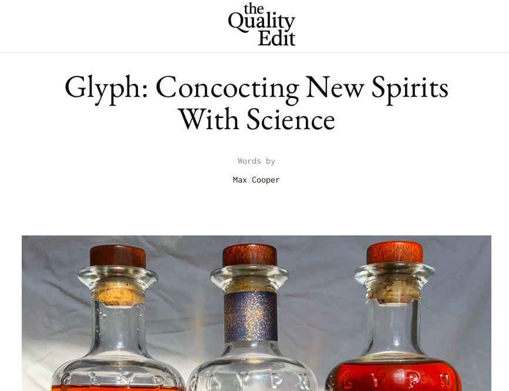
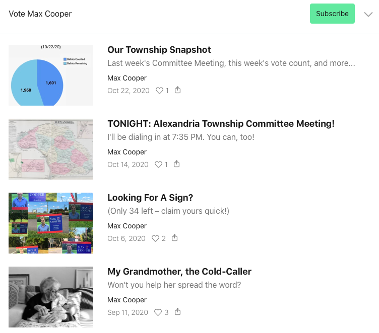

Thanks for putting out the call for your next Creative Writer. I'm excited to put my hat in the ring.
Michaela let me know you'd like to see some of my writing before we chat, so I've gathered a few things here for you. I thought I'd start with some samples of relevant professional work, but please feel free to skip ahead to the extracurricular stuff.
First up: a Brand Voice project for Ritani, a DTC jeweler that was undergoing a complete rebrand at the time. I served as copywriter on this one, working hand in glove with a strategy team.
Next, here's some Brand Architecture / Innovation Strategy content I helped create for Bud Light. In collaboration with a research team, we explored customer territories and occasions ("Palate Maps" and "Demand Moments"), and I penned the voices behind each.
As an independent consultant, I've helmed a variety of creative projects for brands looking to express themselves in new ways. When the Tony Chi design firm was undergoing a recent reorganization, I was tapped to lead its Brand Identity & Messaging work, producing the Principles below in anticipation of its new website.
In addition to my work with small, boutique brands, I also partner directly with teams at large institutions to lend a hand with their written efforts. On top of the internal marketing content I create for Citi Ventures, I serve as the ghost writing one investor's ongoing Forbes column seen below.
I once did a little performance piece at the Whitney Museum, attempting to blend art with artist. Here's me on display, getting viewed by visitors making their way through the space.
This is what they were reading (which I like to think of as a sort of Brand Voice exercise in itself):

It was a wonderful experience.
Last year, a friend of mine launched a site reviewing DTC brands and asked me if I'd like to try out some products and then post my two cents in public. Here's one I wrote about a "molecular whiskey," which definitely put my editorial integrity to the test.
On a whim, I also ran for local office last year. I learned a ton, and it was an interesting challenge to find the right voice for my own campaign. I've been encouraged to run again this year, and will soon be sending out more missives like the below.
A couple years back, a Parisienne friend asked me to help edit her book of English wordplay. I was proud to see it get published a few months ago, and I loved putting my nominal web-development skills to use by transposing it to a digital form. There, too, I had fun adopting the voice of another (especially that of an inanimate object).

Thanks so much for taking the time to look through some of my past projects. I can't wait to hear more about the Voice team and your work, and I look forward to connecting with you soon.
Cheers,
Max